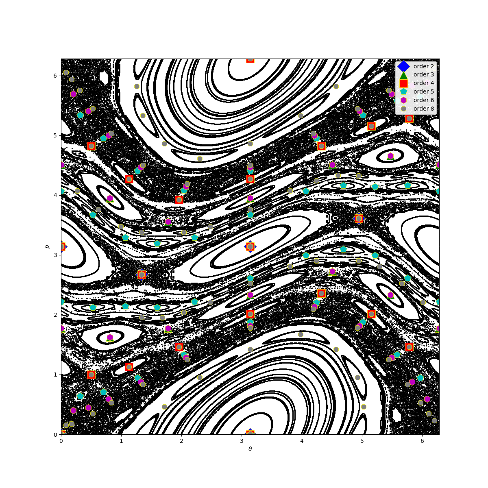

Periodicity
Detecting Stable and Unstable Periodic Orbits of Maps
Chaotic behavior of low dimensional dynamical systems is affected by the position and the stability properties of the periodic orbits existing in the chaotic sea.
Finding unstable (or stable) periodic orbits of a discrete mapping analytically rapidly becomes impossible for higher orders of fixed points. Fortunately there is a numeric algorithm due to Schmelcher & Diakonos which allows such a computation. Notice that even though the algorithm can find stable fixed points, it is mainly aimed at unstable ones.
The functions periodicorbits and lambdamatrix implement the algorithm:
#ChaosTools.periodicorbits — Function.
periodicorbits(ds::DiscreteDynamicalSystem, o, ics [, λs, indss, singss]; kwargs...) -> FP
Find fixed points FP of order o for the map ds using the algorithm due to Schmelcher & Diakonos [1]. ics is a collection of initial conditions (container of vectors) to be evolved.
Optional Arguments
The optional arguments λs, indss, singssmust be containers of appropriate values, besides λs which can also be a number. The elements of those containers are passed to: lambdamatrix(λ, inds, sings), which creates the appropriate \mathbf{\Lambda}_k matrix. If these arguments are not given, a random permutation will be chosen for them, with λ=0.001.
Keyword Arguments
maxiters::Int = 100000: Maximum amount of iterations an i.c. will be iterated before claiming it has not converged.disttol = 1e-10: Distance tolerance. If the 2-norm of a previous state with the next one is≤ disttolthen it has converged to a fixed point.inftol = 10.0: If a state reachesnorm(state) ≥ inftolit is assumed that it has escaped to infinity (and is thus abandoned).roundtol::Int = 4: The found fixed points are rounded toroundtoldigits before pushed into the list of returned fixed pointsFP, if they are not already contained inFP. This is done so thatFPdoesn't contain duplicate fixed points (notice that this has nothing to do withdisttol). Turn this totypemax(Int)to get the full precision of the algorithm.
Description
The algorithm used can detect periodic orbits by turning fixed points of the original map ds to stable ones, through the transformation
with f = eom. The index k counts the various possible \mathbf{\Lambda}_k.
Performance Notes
All initial conditions are evolved for all\mathbf{\Lambda}_k which can very quickly lead to long computation times.
References
[1] : P. Schmelcher & F. K. Diakonos, Phys. Rev. Lett. 78, pp 4733 (1997)
#ChaosTools.lambdamatrix — Function.
lambdamatrix(λ, inds::Vector{Int}, sings) -> Λk
Return the matrix \mathbf{\Lambda}_k used to create a new dynamical system with some unstable fixed points turned to stable in the function periodicorbits.
Arguments
λ<:Real: the multiplier of the C_k matrix, with0<λ<1.inds::Vector{Int}: Theith entry of this vector gives the row of the nonzero element of theith column of C_k.sings::Vector{<:Real}: The element of theith column of C_k is +1 ifsigns[i] > 0and -1 otherwise (singscan also beBoolvector).
Calling lambdamatrix(λ, D::Int) creates a random \mathbf{\Lambda}_k by randomly generating an inds and a signs from all possible combinations. The collections of all these combinations can be obtained from the function lambdaperms.
Description
Each element of indsmust be unique such that the resulting matrix is orthogonal and represents the group of special reflections and permutations.
Deciding the appropriate values for λ, inds, sings is not trivial. However, in ref. [2] there is a lot of information that can help with that decision. Also, by appropriately choosing various values for λ, one can sort periodic orbits from e.g. least unstable to most unstable, see [3] for details.
References
[2] : D. Pingel et al., Phys. Rev. E 62, pp 2119 (2000)
[3] : F. K. Diakonos et al., Phys. Rev. Lett. 81, pp 4349 (1998)
#ChaosTools.lambdaperms — Function.
lambdaperms(D) -> indperms, singperms
Return two collections that each contain all possible combinations of indices (total of D!) and signs (total of 2^D) for dimension D (see lambdamatrix).
Standard Map example
For example, let's find the fixed points of the Standard Map of order 2, 3, 4, 5, 6 and 8. We will use all permutations for the signs but only one for the inds. We will also only use one λ value, and a 21×21 density of initial conditions.
First, initialize everything
using DynamicalSystems, PyPlot, StaticArrays ds = Systems.standardmap() xs = range(0, stop = 2π, length = 21); ys = copy(xs) ics = [SVector{2}(x,y) for x in xs for y in ys] # All permutations of [±1, ±1]: singss = lambdaperms(2)[2] # second entry are the signs # I know from personal research I only need this `inds`: indss = [[1,2]] # <- must be container of vectors!!! λs = 0.005 # <- only this allowed to not be vector (could also be vector) orders = [2, 3, 4, 5, 6, 8] ALLFP = Dataset{2, Float64}[];
0-element Array{Dataset{2,Float64},1}
Then, do the necessary computations for all orders
for o in orders FP = periodicorbits(ds, o, ics, λs, indss, singss) push!(ALLFP, FP) end
Plot the phase space of the standard map
iters = 1000 dataset = trajectory(ds, iters) for x in xs for y in ys append!(dataset, trajectory(ds, iters, SVector{2}(x, y))) end end figure(figsize = (12,12)) m = Matrix(dataset) PyPlot.scatter(view(m, :, 1), view(m, :, 2), s= 1, color = "black") PyPlot.xlim(xs[1], xs[end]) PyPlot.ylim(ys[1], ys[end]);
(0.0, 6.283185307179586)
and finally, plot the fixed points
markers = ["D", "^", "s", "p", "h", "8"] colors = ["b", "g", "r", "c", "m", "grey"] for i in 1:6 FP = ALLFP[i] o = orders[i] PyPlot.plot(columns(FP)..., marker=markers[i], color = colors[i], markersize=10.0 + (8-o), linewidth=0.0, label = "order $o", markeredgecolor = "yellow", markeredgewidth = 0.5) end legend(loc="upper right", framealpha=0.9) xlabel("\$\\theta\$") ylabel("\$p\$")

You can confirm for yourself that this is correct, for many reasons:
- It is the same fig. 12 of this publication.
- Fixed points of order n are also fixed points of order 2n, 3n, 4n, ...
- Besides fixed points of previous orders, original fixed points of order n come in (possible multiples of) 2n-sized pairs (see e.g. order 5). This is a direct consequence of the Poincaré–Birkhoff theorem.